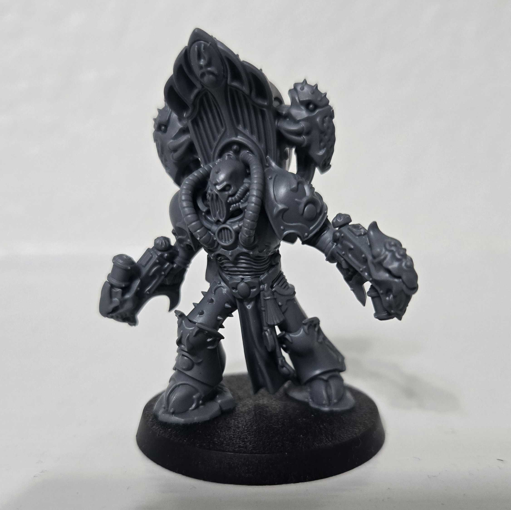
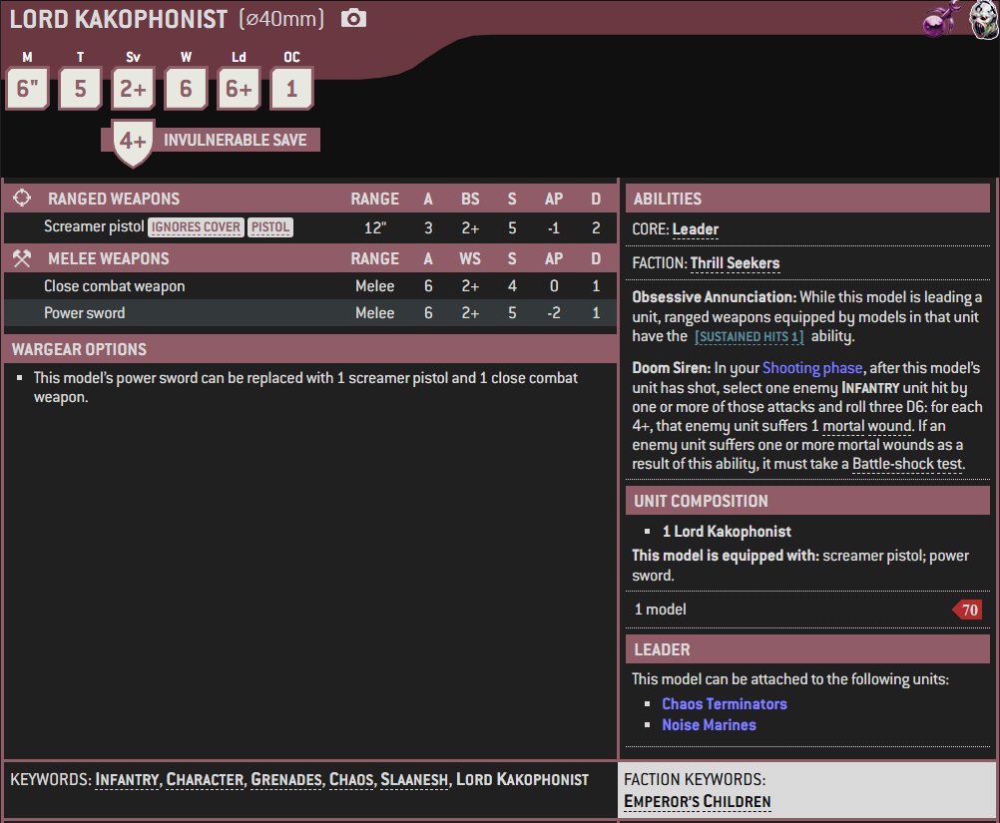

1 / 3

Miniature
2 / 3

Box Art
3 / 3

Artwork
A Lord Kakophonist is an Heretic Astartes Chaos Lord of the Emperor's Children Legion or other Slaaneshi Chaos Space Marine warbands who commands a choir of Noise Marines. Lords Kakophonist are masters in the use of Sonic Weapons, so skilled that they can infuse such weapons with the strange powers of the Warp.
Some of the commanding Chaos Lords of the Emperor's Children Legion and other Chaos Space Marine warbands dedicated to Slaanesh immerse themselves in the rapturous acoustic devastation of Sonic Weapons, guiding choirs of Noise Marines as one of the Lords Kakophonist.
Where their counterparts among the Lords Exultant fight with their Power Swords and skilled tactical minds, Lords Kakophonist expertly orchestrate an overwhelming tirade of sonic destruction so loud it manifests strange eldritch phenomena from the Warp, quaking the very souls of their enemies.
Lords Kakophonist represent the absolute pinnacle of their kind, and it is said that they can detect mystical acoustic vibrations that exist in fluctuating dimensions within the Warp. Few Noise Marines can reach such an apotheosis of sensitivity, and this allows Lords Kakophonist to lead other Noise Marines into battle.
